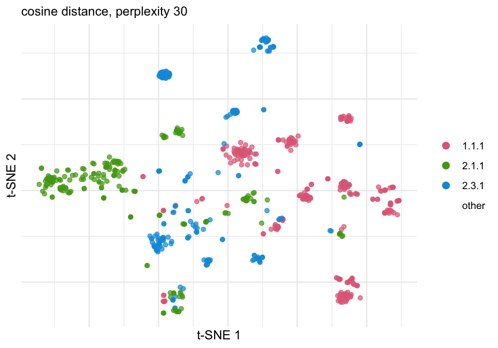
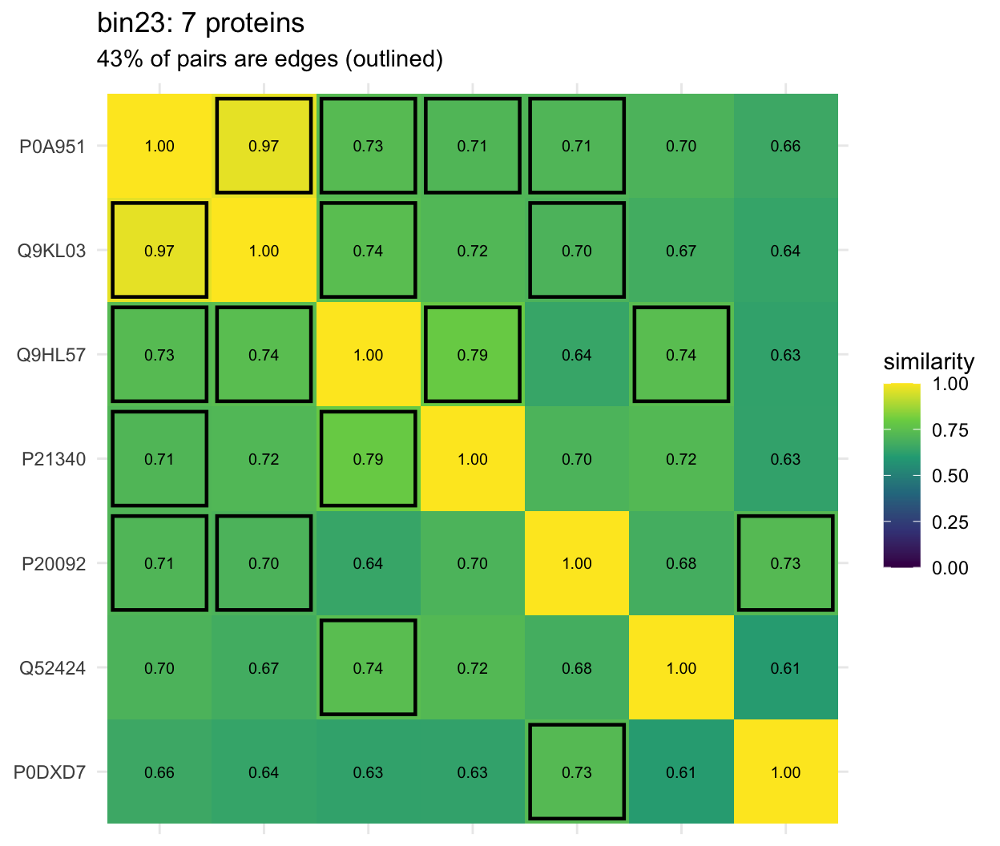

This page explains what each repdist function computes,
in the order of a typical analysis. Full argument lists are in the
package help (?sample_mmd,
?protein_similarity, …).
| Step | Function | Input | Output |
|---|---|---|---|
| Representations | embed_proteins(), read_embeddings() |
sequences, or a TM-Vec database | AAStringSet with mcols(x)$embedding |
| Sample distance | sample_mmd() |
counts (samples × proteins), x |
dist between samples |
| Similarity graph | protein_similarity() |
x |
protein × protein similarity matrix |
| Protein bins | bin_proteins() |
similarity matrix | MCL bins |
| Aggregation | bin_glom() |
counts, bins | counts (samples × bins) |
| QC | plot_tsne(), plot_bin_similarity() |
x, bins |
ggplot objects |
library(repdist)
library(ggplot2)The executable examples use the three largest enzyme classes (EC3) of
the simulation universe: experimentally
characterised Swiss-Prot enzymes whose embeddings were computed with
embed_proteins().
u <- readRDS(file.path("curated", "simulation_universe.rds"))
classes <- names(sort(table(u$annotation$ec3), decreasing = TRUE))[1:3]
keep <- u$annotation$ec3 %in% classes
x <- u$proteins[keep]
ec3 <- setNames(u$annotation$ec3[keep], u$annotation$protein[keep])
table(ec3)
#> ec3
#> 1.1.1 2.1.1 2.3.1
#> 267 204 196Every other function takes the same object: an
AAStringSet of protein sequences, named by accession, with
one embedding row per protein in mcols(x)$embedding. Rows
are unit-normalised.
x
#> AAStringSet object of length 667:
#> width seq names
#> [1] 270 MDNIREGVRQKYAFAIANRGQG...DGEIKEFQGAMVSCFIRAAKPA A0A0D3MJQ5
#> [2] 329 MTRTDFAQSAVASIFTGAIASH...ELAVPNSYAWVLEMRDREGPAS A0A0D4BS77
#> [3] 570 MKLDDKRILIIGAGEVGTAVAE...DVGEVLAYHYKLTGQARRIKGL A0A0D4BSN8
#> [4] 237 MHTDWETSESAEDYSRNTAAAQ...HLPPPPADPTPHPQFLLVRGTA A0A0D4BSP3
#> [5] 302 MPINIPKDLPAKEILEQENIFV...ANLLFVNWLNYYVYQETPYEWE A0A0D8BWP6
#> ... ... ...
#> [663] 352 MYTSFHRIDLPRTIVVGGGVLD...ILGEKGLTREAAEALARKTGVI Q9YER2
#> [664] 342 MNAGHTETVRALRIGVAGCADI...AAVLRQAELVDAVRQAAHLVKI Q9ZA33
#> [665] 305 MPINIPDDLPAASILESEKIFV...SNWLNYYVYQQTPYDLLKIGRS R9T6W8
#> [666] 346 MHESVQNYYGKVLQNSSDLKTS...EGCGGGLPYDRQAAVTAATSCC U2ZU49
#> [667] 161 MNDTKNEVKIIAYEPQYKEAFK...HTPIGKAEYDRADVRMELIFNK W0SLW8
dim(S4Vectors::mcols(x)$embedding)
#> [1] 667 512There are two ways to get it.
embed_proteins(): sequences to embeddings inside
R. It accepts a named character vector, an
AAStringSet or a FASTA path, and a model key
from known_models(). Models run in a Python environment
that repdist builds and pins itself through
basilisk, so users do not install or configure Python.
Weights are downloaded on first use and pinned to fixed revisions
(HuggingFace commits, or a SHA-256-checked file). Every sequence is
embedded whole; nothing is truncated or dropped.
x <- embed_proteins("proteins.fasta") # model = "tmvec"
x <- embed_proteins(seqs, model = "esm2-650m", device = "cpu")read_embeddings(): embeddings computed
elsewhere. TM-Vec users can embed outside R with the
tmvec command-line tool (https://github.com/valentynbez/tmvec) and import its
build-db database (.npz), giving the FASTA it
was built from. An HDF5 file with one group per protein (datasets
seq and emb) is also read; per-residue
embeddings are averaged.
x <- read_embeddings("db/proteins.npz", seqs = "proteins.fasta")known_models() lists the registered
models. The default, tmvec, is a TM-Vec head (Hamamsy et al.
2024) on the ProtT5-XL encoder (Elnaggar et al. 2022). Its
head is trained so that the cosine similarity of two embeddings predicts
the TM-score of the two structures (Zhang and Skolnick 2004); on
this site, “predicted TM-score” means that cosine. The
esm2-* models give general sequence representations without
this calibration.
m <- known_models()
data.frame(
model = names(m),
backbone = vapply(m, `[[`, "", "backbone"),
trained_to = vapply(m, function(s) s$training_max_length, 0),
row.names = NULL
)| model | backbone | trained_to |
|---|---|---|
| tmvec | Rostlab/prot_t5_xl_uniref50 | 1000 |
| tmvec-300 | Rostlab/prot_t5_xl_uniref50 | 300 |
| esm2-8m | facebook/esm2_t6_8M_UR50D | 1022 |
| esm2-150m | facebook/esm2_t30_150M_UR50D | 1022 |
| esm2-650m | facebook/esm2_t33_650M_UR50D | 1022 |
trained_to is the longest sequence in the model’s
training data. It is recorded for reference and not enforced.
sample_mmd(counts, x) treats sample \(P\) as a weighted set of protein embeddings
\(\{(z_i, p_i)\}\), where \(p_i = c_i / \sum_j c_j\) is protein \(i\)’s share of the sample’s counts. Two
samples are compared by the maximum mean discrepancy (Gretton et al. 2012;
Muandet et al. 2017):
\[ \mathrm{MMD}^2(P,Q) = \sum_{i,j} p_i p_j\, k(z_i, z_j) - 2 \sum_{i,j} p_i q_j\, k(z_i, z_j) + \sum_{i,j} q_i q_j\, k(z_i, z_j), \]
with the Gaussian (RBF) kernel on Euclidean distance
\[ k(z_i, z_j) = \exp\!\left(-\frac{\lVert z_i - z_j \rVert^2}{2\sigma^2}\right). \]
The sums run over all proteins observed in either sample, and the
function returns \(\mathrm{MMD}(P,Q)\)
(the square root) as a dist. For unit-norm embeddings \(\lVert z_i - z_j \rVert^2 = 2(1 -
s_{ij})\), where \(s_{ij}\) is
the cosine similarity, so \(k(z_i, z_j) =
\exp(-(1 - s_{ij})/\sigma^2)\); with TM-Vec, \(s_{ij}\) is the predicted TM-score.
Why a kernel distance. If \(k\) were 1 for identical proteins and 0 otherwise, the expression would reduce to the Euclidean distance between the two relative-abundance vectors, an identity-only comparison. With the RBF kernel, the cross term lets different accessions with close embeddings partly match, in proportion to their abundances. MMD compares the two weighted distributions through their kernel mean embeddings; unlike optimal-transport distances it solves no transport problem and is computed directly from the protein kernel matrix. The choice is methodological; it is not a claim that transport-based distances cannot be used.
In the example, samples s1 and s2 share no
accession but draw on the same enzyme class, while s3 draws
on another class:
pick <- function(class, i) names(ec3)[ec3 == class][i]
counts <- matrix(0, 3, length(x),
dimnames = list(c("s1", "s2", "s3"), names(x)))
counts["s1", pick(classes[1], 1:10)] <- 10
counts["s2", pick(classes[1], 11:20)] <- 10
counts["s3", pick(classes[2], 1:10)] <- 10
D <- sample_mmd(counts, x)
D
#> s1 s2
#> s2 0.2818163
#> s3 0.4385876 0.4546992
vegan::vegdist(counts, "bray") # 1 for every pair: no shared accession
#> s1 s2
#> s2 1
#> s3 1 1Bandwidth. With sigma = NULL (default),
\(\sigma\) is the median pairwise
Euclidean distance among the proteins observed in any sample (the median
heuristic). It therefore changes when samples bring in new proteins. The
value used is returned as attr(D, "sigma"); pass it back to
hold the kernel fixed across analyses. For TM-Vec embeddings,
sigma = sqrt(1 - t) places the kernel’s \(1/e\) point at predicted TM-score \(t\).
attr(D, "sigma")
#> [1] 1.058571
D2 <- sample_mmd(counts[1:2, ], x, sigma = attr(D, "sigma"))weighted = FALSE gives every detected protein equal
weight (a presence/absence version). sample_mmd() holds the
protein × protein kernel in memory, so memory grows with the square of
the number of proteins.
protein embeddings
│ cosine similarity
pairwise similarity s_ij
│ similarity and coverage thresholds
weighted sparse graph W
│ Markov clustering
protein bins ── bin_glom() ──► samples × bins countsprotein_similarity()protein_similarity(x, min_sim = 0.7, min_coverage = 0.5)
returns the weighted adjacency matrix
\[ W_{ij} = \begin{cases} s_{ij}, & s_{ij} \ge t_{\mathrm{sim}} \text{ and } \mathrm{cov}_{ij} \ge t_{\mathrm{cov}},\\ 0, & \text{otherwise,} \end{cases} \]
where \(s_{ij}\) is the cosine
similarity of the embeddings, \(t_{\mathrm{sim}}\) = min_sim
and \(t_{\mathrm{cov}}\) =
min_coverage. With TM-Vec this reads \(W_{ij} = \mathrm{TM}_{ij}\) when the
predicted TM-score \(\mathrm{TM}_{ij} \ge
t_{\mathrm{TM}}\) and the coverage passes.
Coverage is computed only for pairs that pass min_sim:
the two sequences are aligned locally (Smith-Waterman (Smith and Waterman
1981); BLOSUM62, gap opening 11, extension 1), and \(\mathrm{cov}_{ij}\) is the smaller of the
two fractions of each sequence that the alignment spans. A pair that
shares one domain but differs over the rest of two long proteins can
still have a high predicted TM-score; the coverage threshold keeps such
a pair from becoming an edge. Coverage is a hard gate: it removes edges
but never rescales their weights. min_coverage = 0 skips
the alignments; n_cores runs them in parallel.
The result is an ordinary symmetric matrix (1 on the diagonal, 0 for
every non-edge), so it can be clustered by other graph algorithms as
well; bin_proteins() is one choice, not a requirement.
S <- protein_similarity(x)
c(proteins = nrow(S), edges = sum(S[upper.tri(S)] > 0))
#> proteins edges
#> 667 3058bin_proteins()bin_proteins(S, inflation = 2) partitions the graph by
Markov clustering (MCL) (van Dongen
2000). MCL simulates random walks on the weighted graph,
alternating expansion (matrix powers) with inflation (elementwise powers
followed by renormalisation), so that flow concentrates within densely
connected regions. Clustering proteins by MCL on a pairwise-similarity
network goes back to TRIBE-MCL (Enright et al. 2002) and
OrthoMCL (Li et al.
2003). Here, each connected component is clustered
separately, each protein’s self-loop takes the weight of its heaviest
edge (as in the mcl program), and proteins without edges
become singleton bins. Higher inflation gives more, smaller bins.
b <- bin_proteins(S)
b$graph
#> proteins edges isolated components
#> 667 3058 87 165
#> largest_component
#> 70
head(lengths(b$clusters))
#> bin1 bin2 bin3 bin4 bin5 bin6
#> 48 25 23 22 19 19The result lists the members of each bin (clusters),
each protein’s bin (membership), a medoid per bin
(representatives) and a summary of the graph
(graph).
Thresholds define edges, not bins. If A–B and B–C
are edges, MCL can put A, B and C in one bin even when A–C is below
min_sim. A bin therefore does not guarantee that every pair
of its members passes the thresholds. Three toy proteins with embeddings
at 0°, 40° and 80° on a circle, so neighbours have cosine 0.77 and the
two ends 0.17:
toy <- Biostrings::AAStringSet(c(A = "MKVLA", B = "MKVLG", C = "MKVLS"))
angle <- c(0, 40, 80) * pi / 180
S4Vectors::mcols(toy)$embedding <- cbind(cos(angle), sin(angle))
S_toy <- protein_similarity(toy, min_coverage = 0)
round(S_toy, 2) # A-C: cosine 0.17, below min_sim, so no edge
#> A B C
#> A 1.00 0.77 0.00
#> B 0.77 1.00 0.77
#> C 0.00 0.77 1.00
bin_proteins(S_toy)$clusters
#> $bin1
#> [1] "A" "B" "C"bin_glom()bin_glom(counts, bins) sums the counts of each bin’s
members:
counts (samples × proteins) ──► membership ──► counts (samples × bins)Sample totals are unchanged and a sparse Matrix stays
sparse. Give it raw counts when the next step is a count model such as
DESeq2.
bin_glom(counts, b)[, 1:5]
#> bin1 bin2 bin3 bin4 bin5
#> s1 10 0 0 0 20
#> s2 50 0 0 0 10
#> s3 0 0 0 0 0plot_tsne()plot_tsne(x, color = NULL) draws a two-dimensional t-SNE
(van der Maaten and Hinton 2008) of the
embeddings computed on cosine distance, \(1 -
s_{ij}\) (for TM-Vec, one minus the predicted TM-score).
color takes labels named by protein; the 12 most frequent
are coloured. t-SNE preserves local neighbourhoods, not distances
between clusters or their sizes, and the layout depends on the random
seed.
set.seed(1)
plot_tsne(x, color = ec3)
plot_bin_similarity()plot_bin_similarity(bins, bin, S, x) shows every
pairwise similarity among one bin’s members. Cell colour is the raw
similarity from the embeddings, before any threshold; outlined cells are
the edges of S, the pairs that passed both thresholds.
Pairs without an outline are in the bin through shared neighbours, or
passed min_sim but failed the coverage gate.
edge_share <- vapply(b$clusters, function(m) {
E <- S[m, m]
mean(E[upper.tri(E)] > 0)
}, numeric(1))
sizes <- lengths(b$clusters)
shown <- names(which.min(edge_share[sizes >= 5 & sizes <= 15]))
plot_bin_similarity(b, shown, S, x)
The bin shown is the one between 5 and 15 members with the smallest share of pairs that are edges.